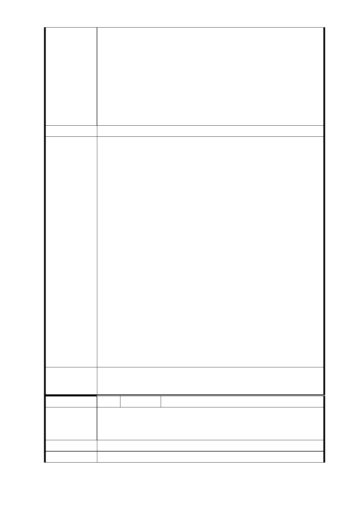

他的都沒有獎勵，那如何可以整合成功呢？都更一定不成
功。政府若要双贏，創造最好的捷運環境，一定要將此完整
街廓 9500 平方公尺一視同仁，全部納入容積獎勵，大家都是
一樣的。如此，才能快速的整合成功，才能美化市容，達到
政府都更的美意。我們可以不要補償金，只要政府容積多給
我們一些即可，政府也不用花錢，那豈不是兩全其美嗎？我
們辛苦一生，好不容易才有一間房屋，請政府能站在百姓的
利益著想，既然政府須要用到百姓的土地做捷運，請政府拿
出魄力做整體規劃，達到最大、最好的成果。
建議辦法
1.有關信義線東延段地下穿越路段，本局將依「大眾捷運系
統工程使用土地上空或地下處理及審核辦法」，就實際被穿
越影響之權益人，辦理土地及建物之穿越補償，並依往例
配合都市計畫變更作業，就地下穿越段所含括街廓一併劃
定為都市更新地區，未來申請之更新單元仍係依照都市更
新自治條例予以相關容積獎勵，且本計畫區建築申請案得
申請「臺北市老舊中低層建築社區辦理都市更新擴大協助
專案計畫」辦理。
2.為避免經捷運地下穿越土地因開發條件不佳，遭都市更新
市府回應
意見
單元劃定時排除，本計畫捷運地下穿越街廓內建築基地如
納入地下穿越段土地一併開發，得申請地下穿越容積獎
勵，其計算公式為：地下穿越容積獎勵 = 基準容積率× 30%
×（地下穿越土地面積/建築基地面積），且限制建築基地
面積須達 2,000 平方公尺始得開發。係屬額外增加的容積
獎勵。
3.前述地下穿越段劃定為都市更新地區街廓（皆為住三用
地，建蔽率 45％）仍須有相關的都市設計管制（為保護
捷運隧道安全，更新基地須沿穿越隧道外緣退縮 3 公尺建
築，地下室開挖範圍亦得參照辦理），並應經臺北市都市
設計及土地使用開發許可審議委員會審議通過後（重點應
在審議核定都市更新獎勵額度），始得申請建造執照。
委 員 會 決 議 同「市府回應意見」。
編 號 24 陳情人 黃志遠（地下穿越）
堅決反對捷運信義線尾軌穿越民宅地層，未來造成地層下
陳 情 理 由 陷，房屋倒塌龜裂將嚴重損害人民居住安全，無人敢保證負
責。
建 議 辦 法 廣大市府廣慈公有地都不動用，卻選擇一定要經過老舊民宅。
市 府 回 應 信義線東延段係接續捷運信義線象山站尾軌東端採地下化方
- 105 -